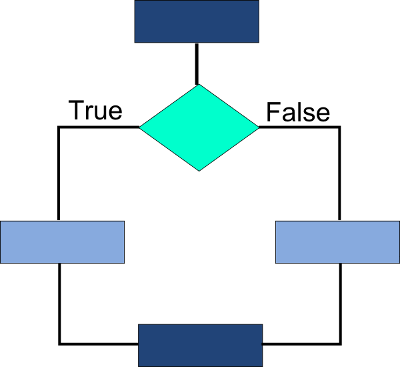
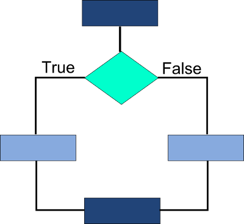
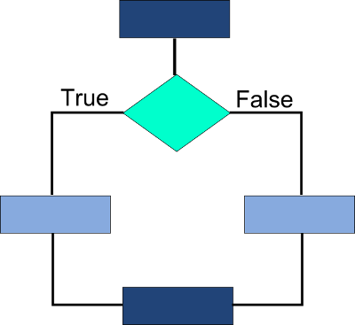

Пример кода if-else:
Ход выполнения программы может быть линейным, т.е. таким, когда выражения выполняются, начиная с первого и заканчивая последним по порядку, не пропуская ни одной строки кода. Но чаще бывает совсем не так. При выполнении программного кода некоторые его участки могут быть пропущены. Чтобы лучше понять почему, проведем аналогию с реальной жизнью. Допустим, человек живет по расписанию (можно сказать, расписание — это своеобразный "программный код", который следует выполнить). В его расписании в 18.00 стоит поход в бассейн. Однако человеку поступает информация, что воду слили, и бассейн не работает. Вполне логично отменить свое занятие по плаванию. Т.е. одним из условий посещения бассейна должно быть его функционирование, иначе должны выполняться другие действия.
Похожая нелинейность действий может быть предусмотрена и в компьютерной программе. Например, часть кода должна выполняться лишь при определенном значении конкретной переменной.
Думаю, тут всё понятно:
if условие1:
блок1
elif условие2:
блок2
else:
блок3
X = A if условие else B
Конструкции if и if-else могут быть представлены в таком виде соответственно:

Пример кода if-else:
print "Привет" tovar1 = 50 tovar2 = 32 if tovar1+ tovar2 > 99 : print "Сумма не достаточна" else: print "Чек оплачен" print "Пока"